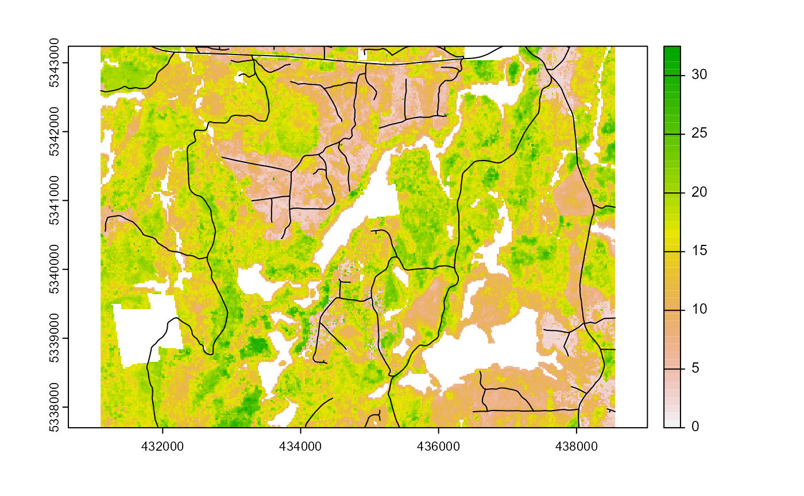
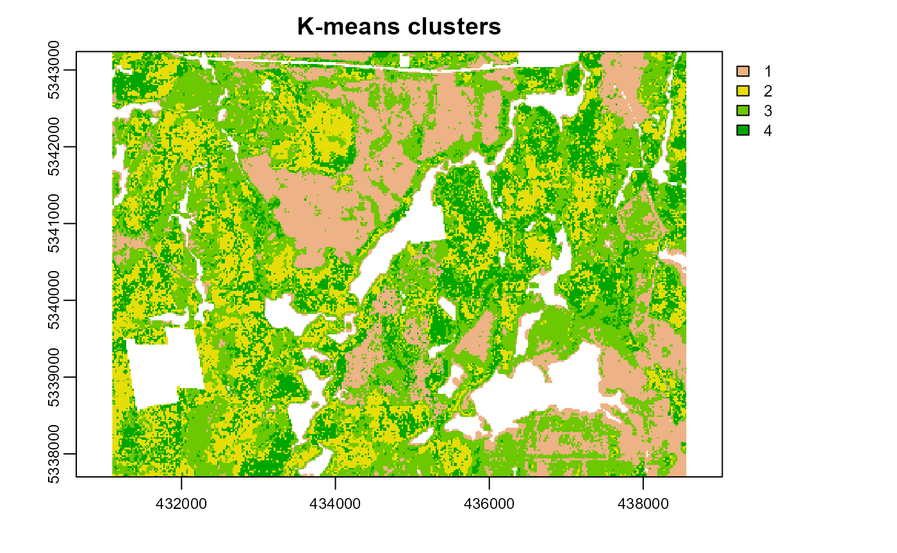
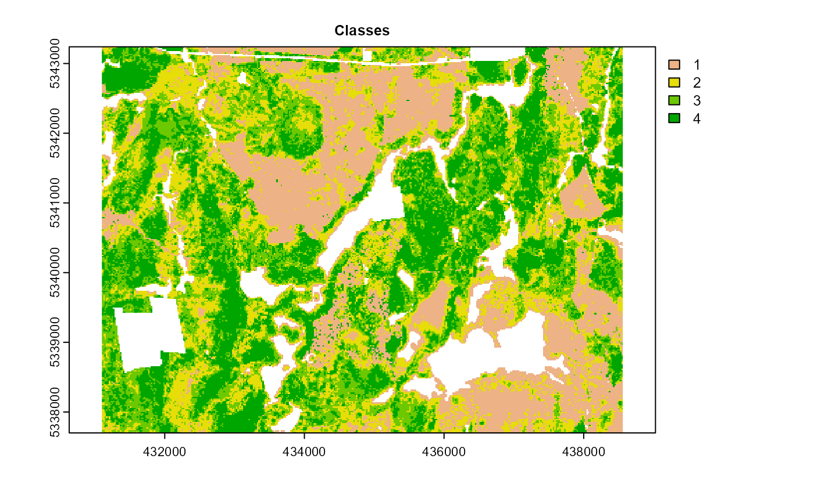
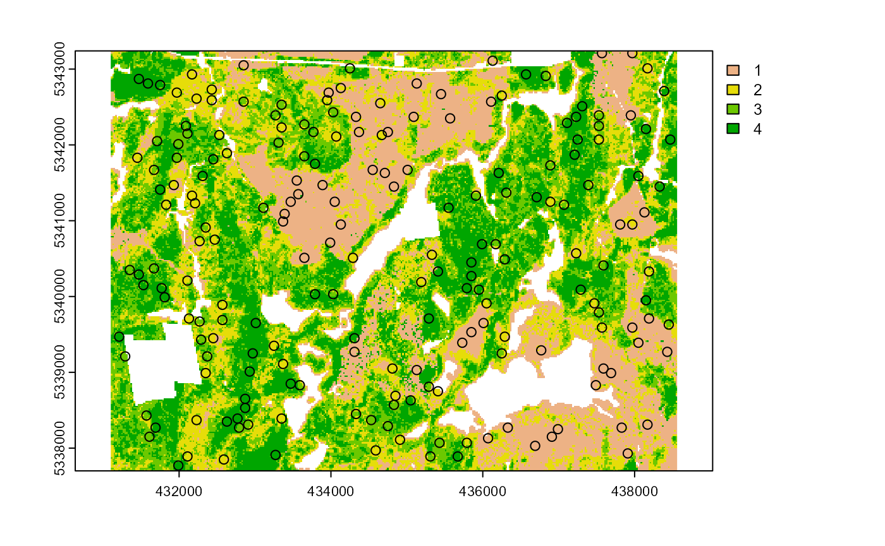

Algorithm structure
sgsR is primarily scripted using the
tidyverse, terra package to handle raster
processing, and sf package for vector manipulation.
Currently, there are 4 primary function verbs that this package
uses:
strat_*- Stratify verb directs the functions to apply stratification algorithms to the input metrics rastermrasterand produce stratified rastersrasteras the output.sample_*- Sample verb directs the functions to extract samples fromsrasters, which is produced fromstrat_*functions. Few algorithms (such assample_srs(),sample_balanced(),sample_systematic()) are capable of usingmrastersas the input because those algorithms do not depend on stratified inputs for sampling.calculate_*- Calculate verb directs the functions to perform calculations; values derived from these calculations are used in subsequent processing. Predefined sample analysis algorithms (such ascalculate_representation(),calculate_coobs()) are included.extract_*- Derive raster data for each co-located sample. Includesextract_metrics()for derivingmrasterdata, andextract_strata()for deriving stratum fromsrasters. Both functions are used internally withinsgsR.
Example data
We demonstrate and provide examples for functions using
sgsR internal data. Use the following code to load data for
mraster and road access. Follow along on your
own device to explore different outputs and better comprehend the
package functions.
access data
a <- system.file("extdata", "access.shp", package = "sgsR")
#--- load the access vector using the sf package ---#
access <- sf::st_read(a)
#> Reading layer `access' from data source
#> `C:\Users\tgood\AppData\Local\R\win-library\4.2\sgsR\extdata\access.shp'
#> using driver `ESRI Shapefile'
#> Simple feature collection with 167 features and 2 fields
#> Geometry type: MULTILINESTRING
#> Dimension: XY
#> Bounding box: xmin: 431100 ymin: 5337700 xmax: 438560 ymax: 5343240
#> Projected CRS: UTM_Zone_17_Northern_Hemisphere
From the plot output we see the first band (zq90) of the
mraster with the access vector overlaid.
Stratified rasters - sraster
In this tutorial, I am going to demonstrate how to produce basic
sraster and existing sample data, which will
be used in subsequent examples.
To produce sraster, we use
strat_quantiles(). This function used the input
mraster$zq90 distribution and divides it into 4 equally
sized quantiles.
#--- apply kmeans algorithm to metrics raster ---#
sraster <- strat_quantiles(mraster = mraster$zq90, # use mraster as input for sampling
nStrata = 4, # algorithm will produce 4 strata
plot = TRUE) # algorithm will plot output
After sraster is produced, use
sample_strat() to perform stratified sampling within our
sraster to generate a representative sample output based on
strata.
#--- apply stratified sampling ---#
existing <- sample_strat(sraster = sraster, # use mraster as input for sampling
nSamp = 200, # request 200 samples be taken
mindist = 100, # define that samples must be 100 m apart
plot = TRUE) # algorithm will plot output
%>%
The sgsR package leverages the %>% operator from the
magrittr package. This allows us to “pipe” operations
together to save in the amount of code needed to achieve an outcome. A
simple example is demonstrated below.
#--- non piped ---#
sraster <- strat_quantiles(mraster = mraster$zq90, # use mraster as input for sampling
nStrata = 4) # algorithm will produce 4 strata
existing <- sample_strat(sraster = sraster, # use mraster as input for sampling
nSamp = 200, # request 200 samples be taken
mindist = 100) # define that samples must be 100 m apart
extract_metrics(mraster = mraster,
existing = existing)
#--- piped ---#
strat_quantiles(mraster = mraster$zq90, nStrata = 4) %>%
sample_strat(., nSamp = 200, mindist = 100) %>%
extract_metrics(mraster = mraster, existing = .)